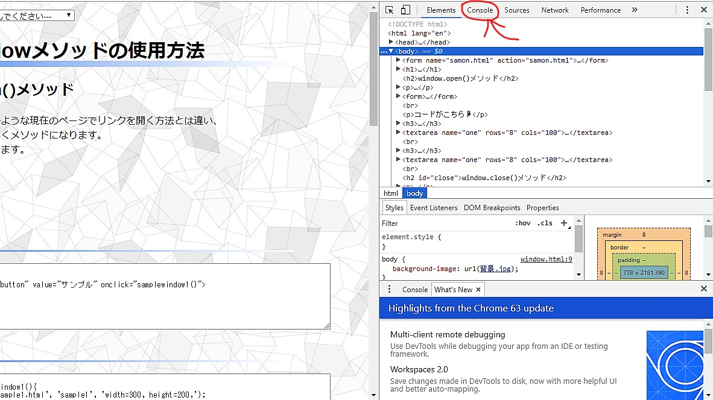
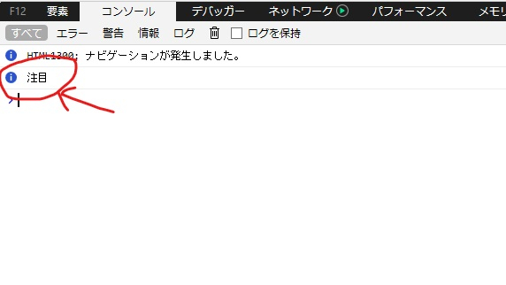
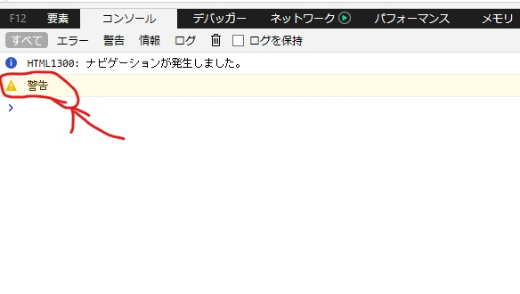
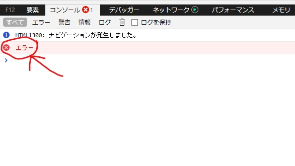
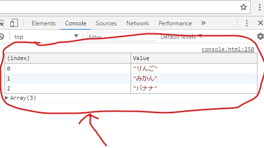

どうも皆さん、おはこんばんにちは私です。
今回は皆さんが今まで使ってきたconsoleオブジェクトについて深く掘り下げていきたいと思います。
とその前に!!!consoleオブジェクトとは何かという人も中にはいるかもしれません。
そういった人のためにも、まずはconsoleオブジェクトについて簡単にご説明したいと思います。
consoleオブジェクトについて説明する前にまずはコンソールというものについてを知っておく必要があります。
コンソールとは各ブラウザに実装されているWEBページの動作確認、またそのデバッグ等に用いられているものです。
そしてコンソールにアクセスして色々なアプローチを与えるのが、冒頭でも述べているconsoleオブジェクトになります。
こちらの赤丸で囲まれているのがコンソールになります。
☟ ☟ ☟ ☟ ☟ ☟
はい、じゃここからが本題になります。
consoleオブジェクトの種類といっても一般に知られているのはだいたいconsole.logぐらいだと思います。
ですが、それは間違いです。
実はその種類はconsole.logを含め19種類もあるんです!!!
(はいここまで無駄に字をデカくしたり、赤くしたり、!マーク出したりしてましたがここからは普通にやります。)
全部を紹介したいところですがこの通り数が多いため、今回は有用かつ簡単に扱えるもの(つまりはド定番ですね)を厳選して紹介したいと思います。
なので、全部を知りたいよという方はこのサイトをささっと閉じて頂いてこちらのサイトをご覧になってください。
コンソールに情報メッセージを出力するメソッドで、簡単に言うと!マークを出して注目させるというものになります。
コードがこちら☟
☟ ☟ ☟ ☟ ☟ ☟
このメソッドはさっきのメソッドと少し似ていますが、こちらが表しているのは警告!!!という意味になります。
コードがこちら☟
☟ ☟ ☟ ☟ ☟ ☟
このメソッドはその名の通り、エラー表示を出すことができます。
よくあるやつですね。
コードがこちら
☟ ☟ ☟ ☟ ☟ ☟
このメソッドは今まで紹介してきたようなマークがつくだけでなく、コンソール画面の見た目から変わるもので
ちょっと見栄えがよくなります。(個人的意見ですが）オブジェクトの中身をテーブル形式で見れるのが魅力ですね。
コードがこちら☟
☟ ☟ ☟ ☟ ☟ ☟
さて、他にも紹介したいものはございますが今日はこの辺で...
今回ご紹介した情報が皆様のさらなる成長に繋がることを心から願っております。
最後にこの記事を最後まで読んでいただい方、誠にありがとうございました。